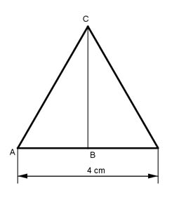

Aufgabe 104 Ein Dreikantstahl hat als Grundfläche ein gleichseitiges Dreieck mit einer Seitenlänge von 4 cm und ein Volumen von 700 cm³. Durch Auswalzen soll eine Seitenlänge auf 2,8 cm erzielt werden. Wie lang ist der Stahl vor und nach dem Auswalzen?  Satz von Pythagoras im Dreieck ABC: AB = 4 cm/2 = 2 cm AC² = AB² + BC² |-AB² BC² = AC² - AB² = 4² cm² - 2² cm² = 12 cm² |√ BC = 3,46 cm = hDreieck V = G * lvorher 4 cm * 3,46 cm V = ----------------- * lvorher = 6,92 * lvorher cm³ | :9,94 2 700 lvorher = ------- cm = 101 cm 6,92 Satz von Pythagoras im neuen Dreieck ABC: AB = 2,8 cm/2 = 1,4 cm AC² = AB² + BC² |-AB² BC² = AC² - AB² = 2,8² cm² - 1,4² cm² = 5,88 cm² |√ BC = 2,425 cm = hDreieckneu V = G * ldanach 2,8 cm * 2,425 cm V = --------------------- * ldanach = 3,395 * ldanach cm³ |:3,395 2 700 ldanach = -------- cm = 206,2 cm 3,395